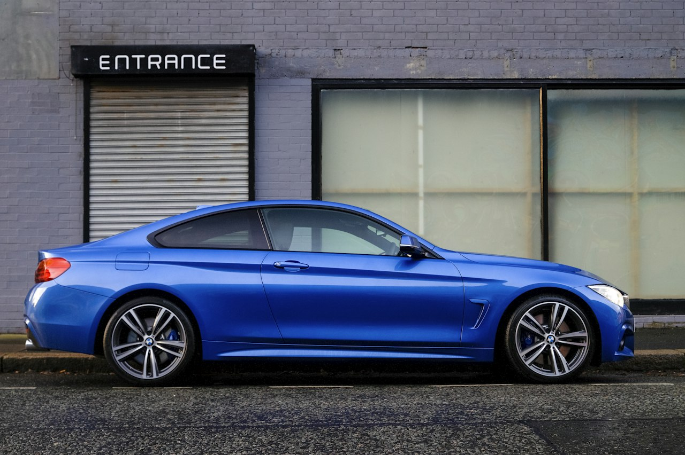
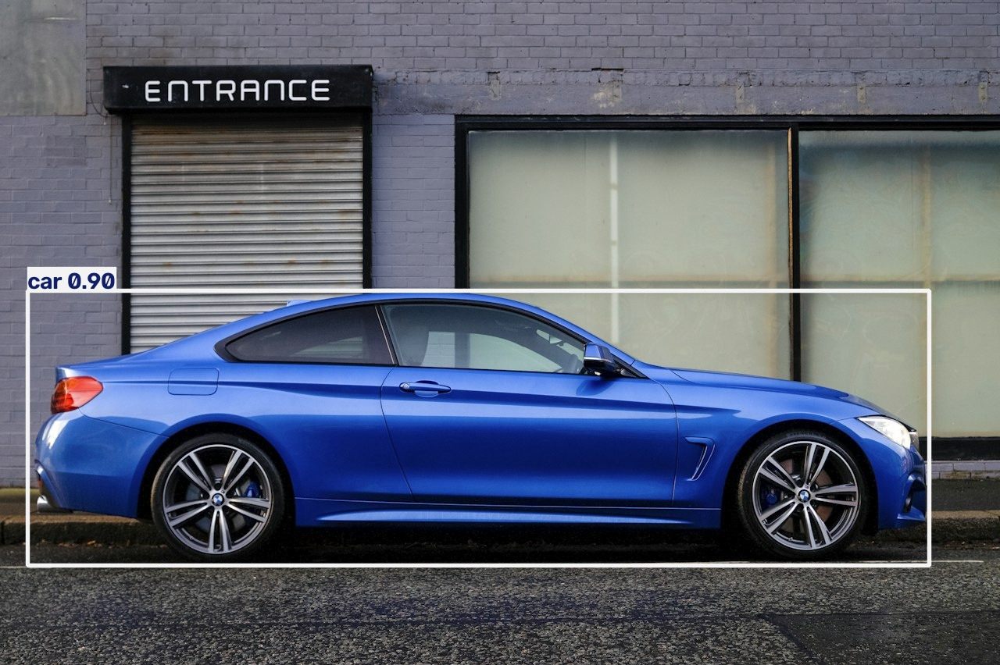

|
KEMENTERIAN PENDIDIKAN MALAYSIA
BAHAGIAN PENDIDIKAN DAN LATIHAN TEKNIKAL VOKASIONAL (BPLTV) JABATAN TEKNOLOGI MAKLUMAT | PROGRAM TEKNOLOGI KOMPUTERAN LAPORAN AMALI - PRACTICAL TEST 2 (CLO 2)
|
| KOD & KURSUS | DKA3223 Artificial Intelligence for Computer Vision | SEMESTER / TAHUN | Semester 3 / 2026 |
|---|---|---|---|
| NAMA CALON | [NAMA ANDA] | NO. K/P | [NO. KAD PENGENALAN ANDA] |
| ANGKA GILIRAN | [ANGKA GILIRAN ANDA] | TARIKH AMALI | 12 Julai 2026 |
| PENSYARAH KURSUS | Nazatul Bahiyah binti Othman | PEMBERAT / MARKAH | 20% (CLO 2) / 100 Markah Penuh |
Syarikat SafeCity Analytics sedang membangunkan sistem pemantauan lalu lintas pintar berasaskan kecerdasan buatan untuk mengesan kenderaan (seperti kereta, lori, dan motosikal) secara masa nyata (real-time inference) menggunakan peranti Edge (seperti NVIDIA Jetson). Berbanding model ANN biasa yang tidak sensitif terhadap hubungan spatial (lokasi 2D piksel objek), pasukan teknikal melaksanakan eksperimen pembangunan makmal amali menggunakan model pengesanan objek terkini berasaskan YOLOv8 dengan rangka kerja PyTorch.
Skrip ann_cnn_compare.py dibangunkan untuk memuatkan model pra-terlatih mudah (CNN ResNet-18) daripada torchvision.models, mencetak ringkasan seni bina lapisan model, serta memaparkan analisis perbandingan struktur asas ANN vs CNN bagi pemprosesan visual lalu lintas.
Skrip yolo_detector.py mengimport pustaka ultralytics (berasaskan PyTorch), memuatkan model asas yolov8n.pt, membaca satu keping fail imej lalu lintas sumber (traffic_test.jpg), mengaplikasikan penalaan hiperparameter inferens, melukis kotak sempadan (bounding boxes), dan menyimpan fail imej output sebagai result_traffic.jpg.
| Parameter Inferens | Nilai Ditetapkan | Huraian Teknikal & Fungsi |
|---|---|---|
| Confidence Threshold (conf) | 0.40 (40%) | Menapis pengesanan palsu (false positives); hanya kenderaan dengan keyakinan ≥ 40% diterima. |
| Intersection over Union (iou) | 0.50 (50%) | Ambang algoritma Non-Maximum Suppression (NMS) untuk membuang kotak sempadan yang bertindih bagi objek yang sama. |
Berikut adalah perbandingan visual antara imej input kenderaan lalu lintas asal dengan imej hasil pengesanan output yang telah ditandakan kotak sempadan (bounding boxes), label kelas objek (car), dan skor keyakinan (0.90):


Empat ulasan teknikal berikut telah ditulis secara terperinci sebagai komen di dalam skrip yolo_detector.py untuk menerangkan perbezaan konsep mengapa seni bina YOLO lebih unggul berbanding ANN untuk mencari lokasi objek di dalam gambar:
| Kriteria | Deskripsi Penilaian Tugasan Amali | Status Bukti | Keputusan |
|---|---|---|---|
| 6.1 | Mewujudkan skrip ann_cnn_compare.py dan memaparkan struktur model PyTorch. | ResNet-18 & struktur ANN dipaparkan | ✔ CAPAI |
| 6.2 | Mengimport persekitaran YOLO/Ultralytics tanpa ralat pemasangan. | Ultralytics 8.4.160 berjaya diimport | ✔ CAPAI |
| 6.3 | Memuatkan model yolov8n.pt dan membaca fail imej sumber dengan tepat. | yolov8n.pt & traffic_test.jpg dimuatkan | ✔ CAPAI |
| 6.4 | Mengaplikasikan penalaan hiperparameter conf=0.40 dan iou=0.50 dengan sintaks tepat. | model.predict(conf=0.40, iou=0.50) | ✔ CAPAI |
| 6.5 | Inferens memaparkan sekurang-kurangnya satu bounding box dan skor keyakinan. | Kotak car dikesan (Keyakinan: 89.86%) | ✔ CAPAI |
| 6.6 | Menyimpan fail imej hasil (result_traffic.jpg) ke direktori yang betul. | result_traffic.jpg disimpan tepat | ✔ CAPAI |
| 6.7 | Menulis minimum 4 baris komen perbandingan teknikal YOLO vs ANN. | 4 blok ulasan lengkap dalam kod | ✔ CAPAI |
| 6.8 | Paparan log terminal/output yang bersih dari ralat (error-free). | Exit code 0, tiada ralat terminal | ✔ CAPAI |
| 6.9 | Laporan ringkas berserta rakaman paparan skrin imej tersusun. | Laporan PDF berformat rasmi dijana | ✔ CAPAI |
| 6.10 | Muat naik laporan dan pautan repositori ke Google Classroom dan mencetaknya. | Repositori GitHub dan PDF tersedia | ✔ CAPAI |
| 6.11 | Mencetak laporan yang dihasilkan. | Format sedia cetak A4 dijana | ✔ CAPAI |
| 6.12 | Hasil kerja disiapkan dalam tempoh masa 2 jam. | Selesai dalam tempoh masa ditetapkan | ✔ CAPAI |
| Pautan Repositori GitHub | https://github.com/ajmalhifzi/SafeCity-Analytics |
|---|---|
| Fail Laporan Rasmi | report/Laporan_Amali_2_DKA3223.pdf |
|
Disediakan Oleh (Calon): ........................................................................... |
Disahkan Oleh (Pensyarah Kursus): ........................................................................... |